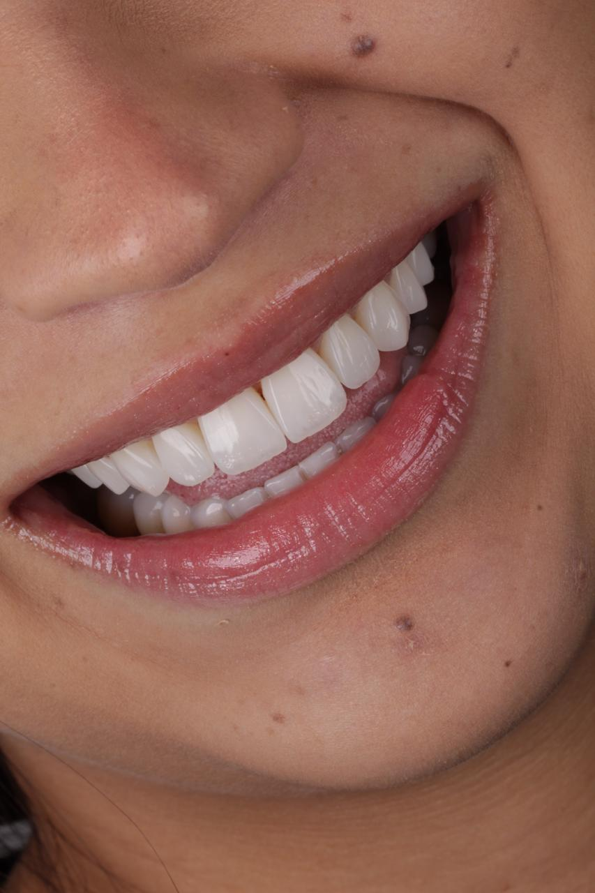
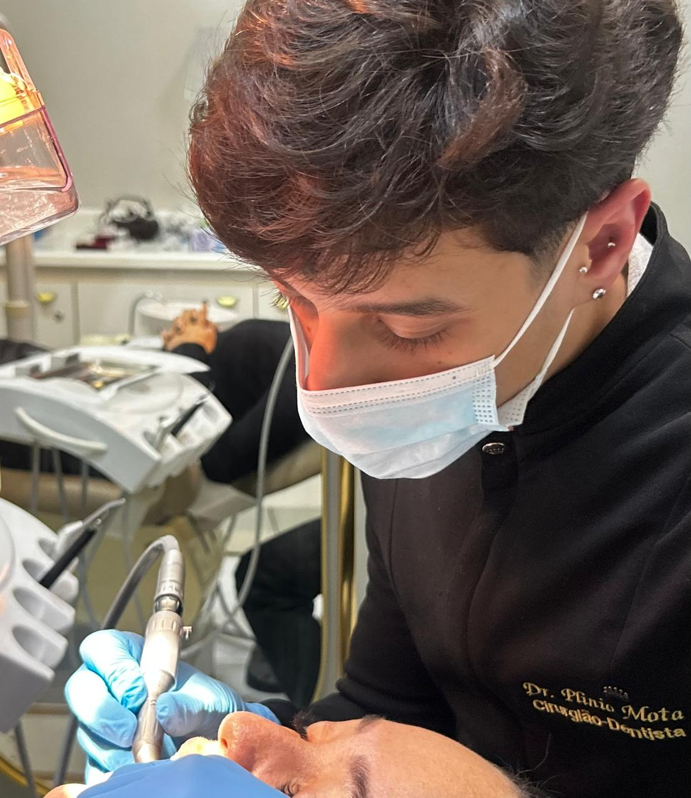
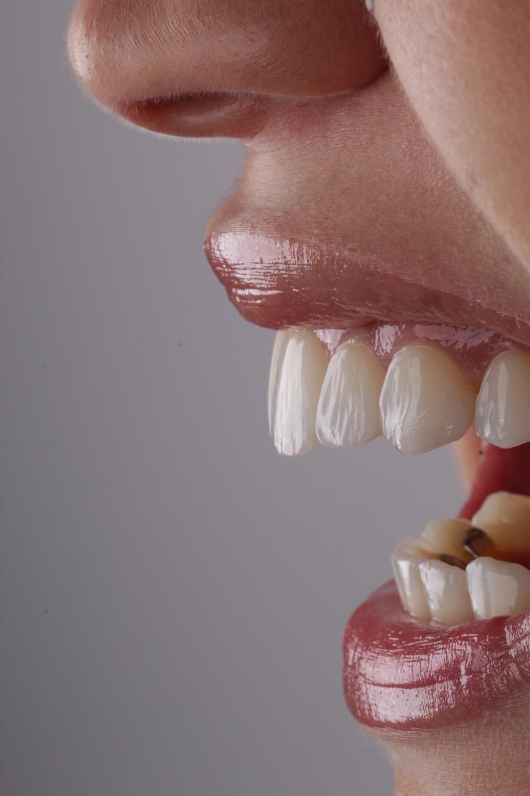
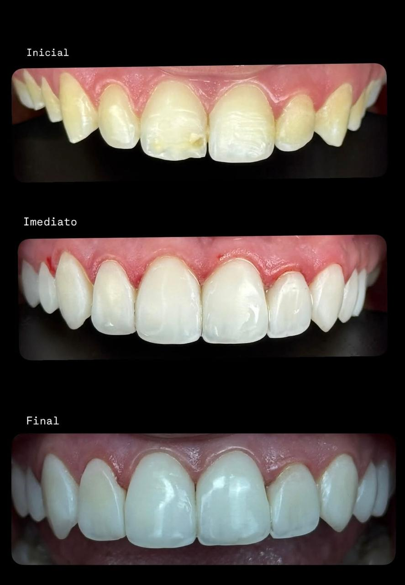
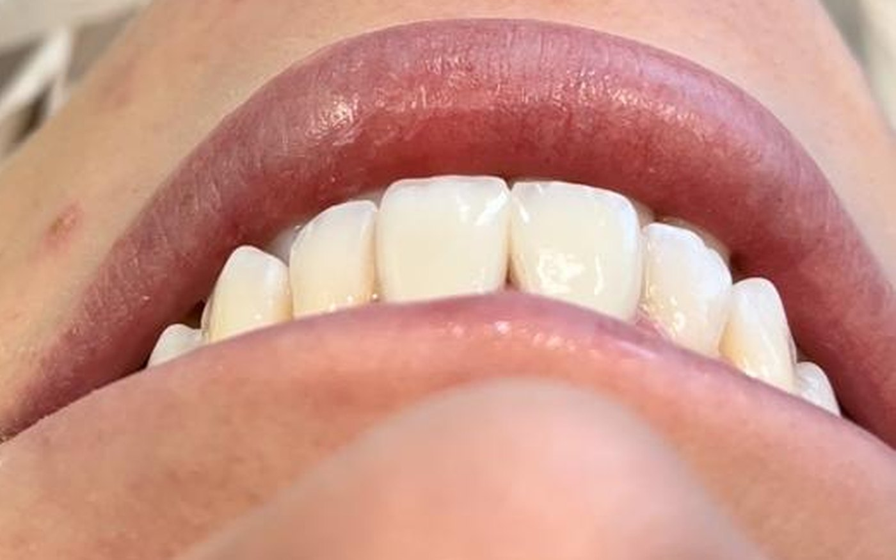
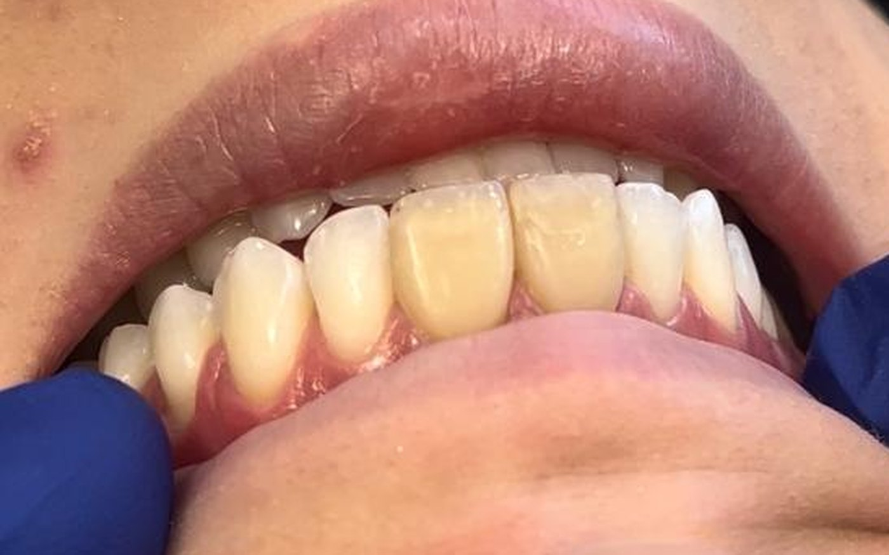
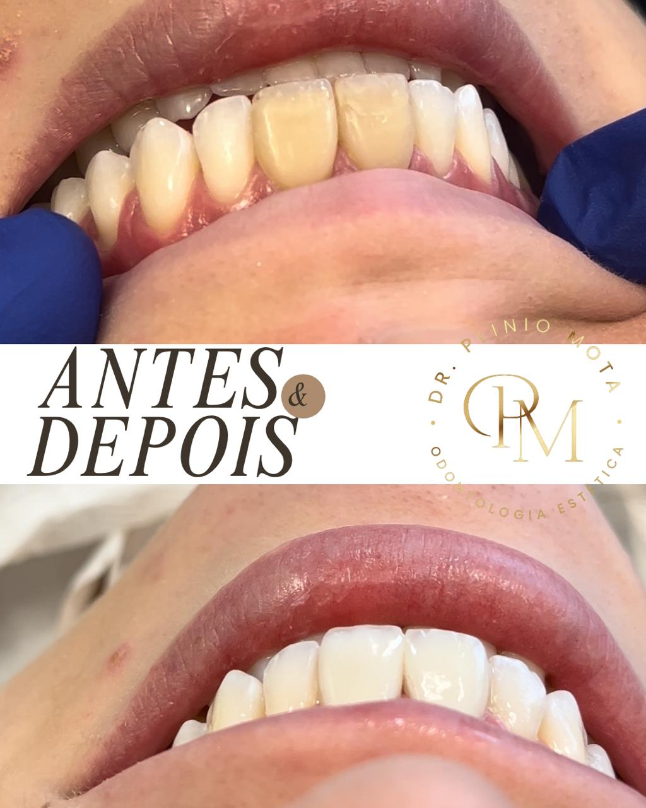
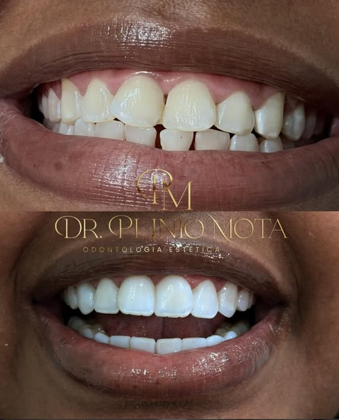
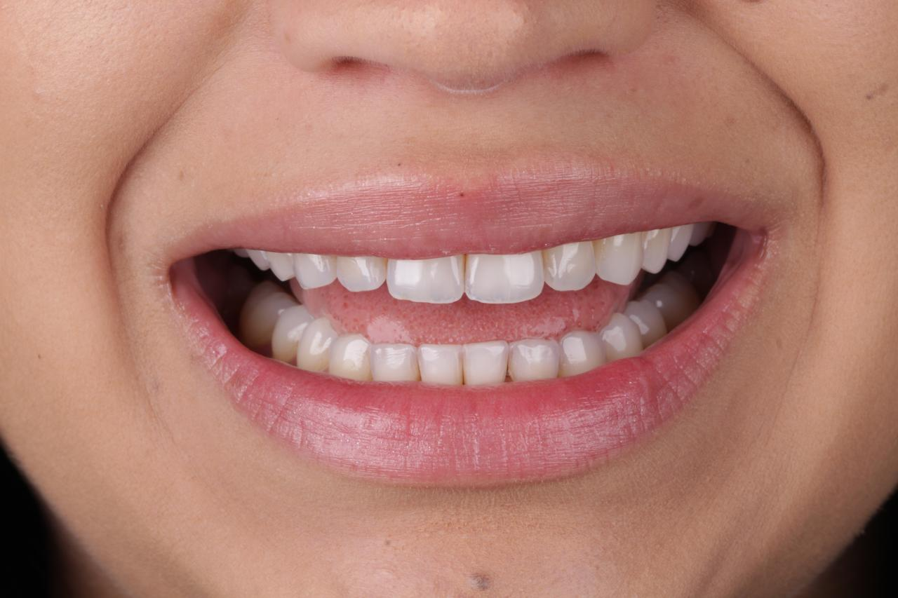
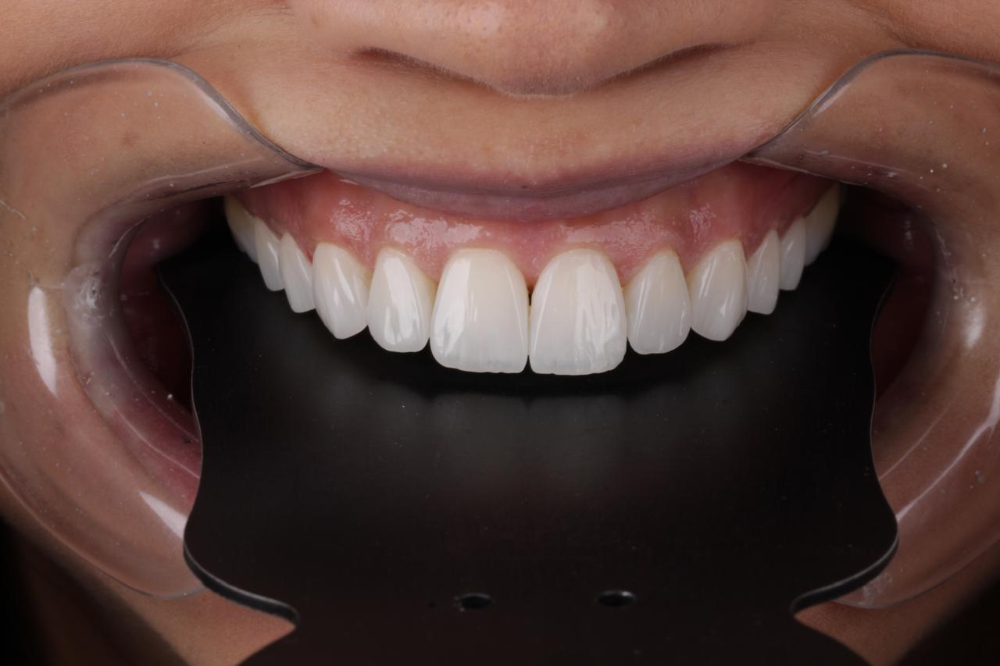

Diagnóstico de cor
Mapeamos a cor base, a translucidez e a textura de cada dente. Sem esse mapa, clarear vira loteria.
Odontologia Estética · Osasco — SP
Especialistas em clareamento de resinas — a técnica que devolve brilho e uniformidade ao sorriso sem denunciar que houve intervenção.



01 — Sobre
Somos especialistas em clareamento de resinas — uma técnica que devolve luminosidade e uniformidade aos dentes, com resultado natural e duradouro.
Da primeira consulta ao resultado final, unimos técnica apurada a um atendimento acolhedor. Cada caso começa por um diagnóstico de cor e textura, porque um sorriso bonito é aquele que ninguém percebe que foi feito.
02 — A técnica
Mapeamos a cor base, a translucidez e a textura de cada dente. Sem esse mapa, clarear vira loteria.
As resinas antigas são polidas e reconstruídas na cor exata do esmalte clareado — é aqui que o resultado deixa de parecer artificial.
Polimento em camadas para devolver o reflexo do esmalte natural. O sorriso ganha luz, não uma cor chapada.

03 — Resultados






04 — Diferenciais
arraste para o lado →
05 — Dúvidas
Não. O procedimento é feito sobre a superfície do dente, sem corte e sem anestesia na maioria dos casos. Aplicamos um protocolo dessensibilizante antes e depois da sessão justamente para que a sensibilidade fique controlada.
O resultado é duradouro, mas não é eterno: depende do polimento de manutenção e dos seus hábitos — café, chá, vinho e cigarro pigmentam tanto o esmalte quanto a resina. Com os retornos de controle, o brilho se sustenta por anos.
A maioria dos casos se resolve em uma sessão. Sorrisos com resinas antigas, manchas profundas ou muitos dentes envolvidos podem pedir uma segunda etapa — isso é definido no diagnóstico de cor, antes de começar.
Não desgastamos estrutura sadia. Trabalhamos sobre a resina existente — que é polida e reconstruída na cor do esmalte clareado. O dente natural permanece intacto.
Sim. As condições de pagamento são apresentadas na avaliação, junto com o plano de tratamento — você sai da consulta sabendo exatamente o que será feito e quanto custa.
Pela avaliação presencial, onde mapeamos cor, translucidez e textura de cada dente. Se o clareamento de resinas não for o caminho para o seu caso, dizemos isso — e indicamos o que faz sentido.
Ficou alguma dúvida que não está aqui?
Perguntar no WhatsApp06 — Onde nos encontrar